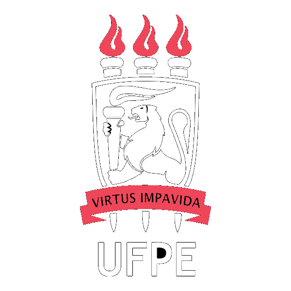
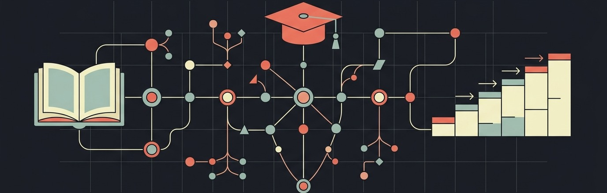
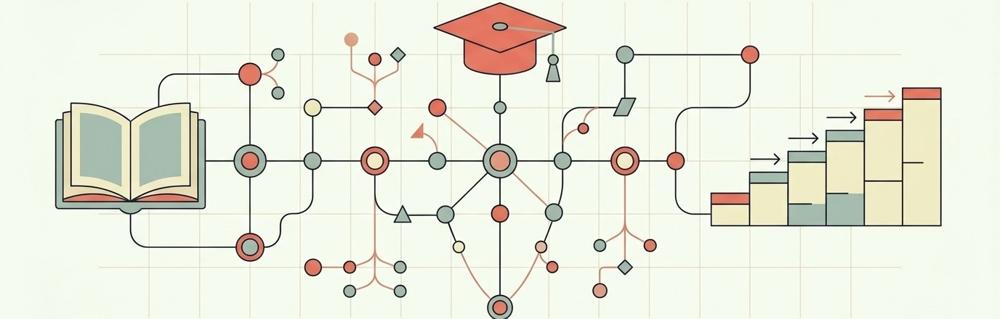
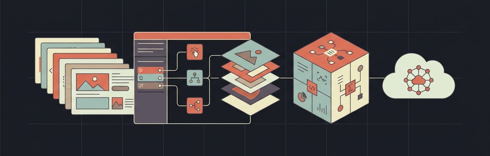
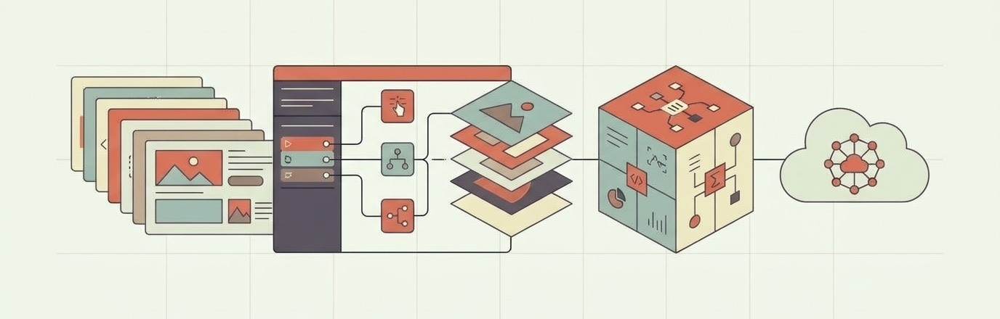
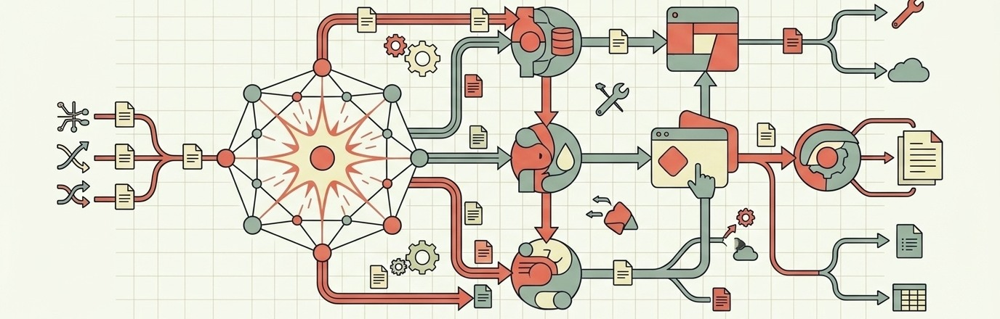
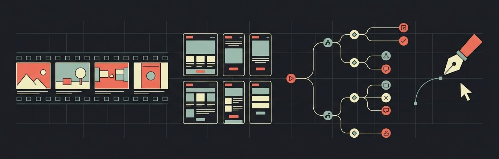
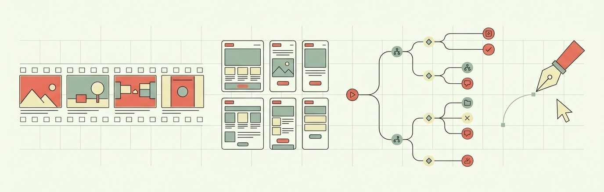

My name is Erick Vasconcelos. I am a Brazil-based Learning Experience Designer with over 9 years of frontline experience at companies like TikTok and 99. My specialty is decoding complex operations and business processes to build training journeys that drive real impact and operational traction.
All powered by proven instructional design methodologies, artificial intelligence automations, and data-driven workflows.
The best corporate learning is that which simplifies what seems inaccessible and delivers immediate value to teams' day-to-day work. That has been the approach I pursued across every project I have led.
At TikTok, this meant designing rapid cycles to train over 1,500 moderation professionals in dynamic operational scenarios. At 99, it translated into architecting the learning ecosystem and sales enablement tracking. At Avenue Code and TTEC, I implemented scalable training development routines and key learning indicator dashboards.
I combine a foundation in communication and research with modern artificial intelligence tools to automate operational steps and focus on what truly matters: creating intuitive, measurable, and scalable learning experiences.
Click on any role to expand full details of deliveries and business impact.
Liderança da modernização da infraestrutura de capacitação corporativa, gerenciando o ciclo completo de implantação e governança do LMS para a força comercial nacional — desde o alinhamento de escopo com lideranças executivas até a arquitetura de catálogo e trilhas assíncronas.
Estruturação do programa de sales enablement e integração comercial alinhado aos playbooks de vendas, implementando framework de avaliação baseado em Kirkpatrick Nível 2 para mensurar retenção técnica e acelerar a produtividade em campo.
Liderança técnica do pod de T&D LATAM em Monetization Integrity, sendo responsável pela arquitetura curricular, governança pedagógica e capacitação crítica para mais de 1.500 moderadores internos e de BPO em um ambiente global hiper-regulado.
Concepção de esteiras com IA Generativa (LLMs) para parsing semântico automatizado de políticas corporativas, reduzindo o ciclo de produção em ~70% e garantindo alinhamento em sprints quinzenais com paridade multilíngue (PT/EN/ES).
Consultoria estratégica de aprendizagem voltada à transformação digital e upskilling corporativo para contas multinacionais, conduzindo diagnóstico de necessidades (LNT) e desenho de competências técnicas.
Concepção da trilha corporativa de capacitação em Scrum para a Braskem no Articulate Rise 360, aplicando Action Mapping e dinâmicas de tomada de decisão baseadas em desafios reais de negócio.
Gestão de conhecimento (KM) e arquitetura instrucional para operações de BPO de missão crítica, liderando o desenvolvimento de soluções para contas corporativas nos setores financeiro (Mastercard) e de saúde (Kaiser Permanente).
Padronização de procedimentos e base bilíngue (EN/PT) para Mastercard, além de simuladores clínicos ramificados no Storyline 360 com rigor regulatório HIPAA para Kaiser Permanente.
Instructional design for corporate learning platforms, focusing on microlearning, gamified interactive journeys, and self-paced modular architectures.
Development of advertising narratives, creative copywriting for corporate brands, strategic digital content planning, and audience engagement analysis.

Facilitation of theoretical and practical undergraduate lectures, active learning methodologies, syllabus design, and mentoring academic capstone projects.
Below are the four integrated pillars that underpin my deliverables in technical learning, governance, and innovation. Click the tabs to switch between skill areas.Below are the four integrated pillars that underpin my deliverables in technical learning, governance, and innovation. Click the tabs or the navigation arrows to switch between skill areas.


Instructional architecture driven by learner autonomy, practical transfer to the workplace, and measurable business impact assessment.


Enterprise administration of LMS/LXP ecosystems, catalog governance, and content development at global scale.

Learning pipeline acceleration through agentic workflows, agent skills assignment, context engineering, and AI-assisted prototyping.


Translating dense technical ecosystems into intuitive learning experiences, analytical scriptwriting, and visual prototypes built for high cognitive retention.
Explore below instructional design case studies delivering measurable business impact. Click the tabs on the left to navigate between cases.Explore below instructional design case studies delivering measurable business impact. Click the tabs or the navigation arrows to switch between cases.
I am available for strategic L&D initiatives, LMS implementation, curriculum design, AI enablement, or senior roles in instructional design and corporate training.